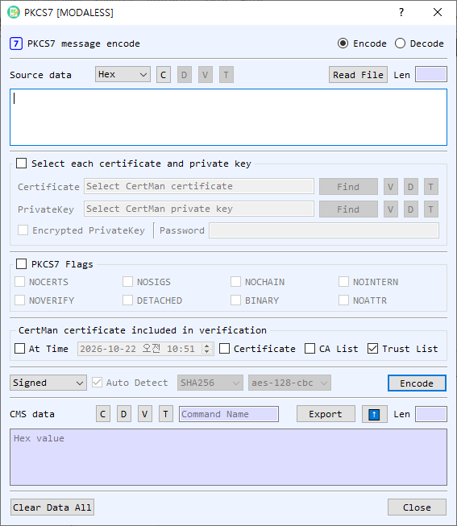

PKCS7 Dialog Guide
The PKCS7 dialog creates and processes PKCS#7/CMS messages. It supports data and digest containers, signing and signature verification, and enveloped-data encryption and decryption.

Figure 1. PKCS7 dialog in Encode mode. Select Encode or Decode at the top; the available command and controls change with the selected mode.
Screen Areas
- Encode / Decode — Choose whether to create a PKCS7/CMS message or process an existing one. The source and output labels change to reflect the mode.
- Source Data / CMS data — Enter source content or the CMS message. Choose Hex, String, or Base64 for the source representation. Read File loads a file; files can also be dragged into the dialog. In Decode mode, V, D, and T view, decode, and identify the source object. C clears the source.
- Select each certificate and private key — Enable this group to select certificate and private-key files directly. Find browses for a file; V, D, and T view details, decode the file in BerEditor, and show its type. Enable Encrypted PrivateKey and enter its password when the private key is password protected.
- PKCS7 Flags — Enable the group to apply operation flags. The available flags are
NOCERTS,NOSIGS,NOCHAIN,NOINTERN,NOVERIFY,DETACHED,BINARY, andNOATTR. Their effect depends on the selected command. - Verification options — In the certificate verification area, choose whether to validate At Time (using the adjacent date/time), include a selected Certificate, use the CA List, or use the Trust List. These options are used for signature verification; the default screen has Trust List enabled.
- Hash and cipher — Select a hash algorithm for signing-related operations and an AES-CBC cipher (aes-128-cbc, aes-192-cbc, or aes-256-cbc) for enveloped-data operations. Controls are enabled when relevant to the selected command.
- Command and Auto Detect — Choose an operation. In Decode mode, Auto Detect identifies the CMS type and dispatches to the matching decode/verify operation. Turn it off to choose a decode command manually.
- Run button — Executes the selected command. It is labeled Encode or Decode according to the mode.
- CMS data / Source data output — Displays the result and its length. The output representation selector and ⬆ transfer button let you reuse the result as input. Export saves the output. V, D, and T view, decode, and identify the output; C clears it. For encoded output, the command name is shown beside the controls.
- Clear Data All / Close — Clear the dialog's values or close it.
Create a PKCS7/CMS Message
- Select Encode and enter content in Source Data, or load it with Read File.
- Select an encoding command:
- Data wraps content in a CMS Data object.
- Digest creates a CMS DigestedData object using the selected hash.
- Signed creates a signed message. Select the signing certificate and private key.
- Enveloped encrypts the content for the selected recipient certificate. Choose an AES-CBC cipher.
- Add Signed adds a signer to an existing SignedData message; choose the hash and provide the signing certificate and private key.
- Set any applicable flags and options.
- Select Encode. The CMS message appears in the output area. Use Export to save it.
Decode, Verify, or Decrypt a Message
- Select Decode and provide the CMS data. Use Read File or drag a file into the dialog if convenient.
- Leave Auto Detect enabled to process supported Data, DigestedData, SignedData, or EnvelopedData according to its type. To choose explicitly, turn off Auto Detect and select Verify, Developed, GetData, or GetDigest.
- For Verify, configure the certificate and trust/CA/time options as needed. For Developed (decryption of EnvelopedData), select the recipient certificate and matching private key. Enter the private-key password if required.
- Select Decode. Extracted data, digest data, verification results, or decrypted content is shown in the output area or reported by the dialog.
PKCS7 Flags
| Flag | Purpose |
|---|---|
NOCERTS |
Omit signer certificates when creating signed data. |
NOSIGS |
Skip signature verification. |
NOCHAIN |
Disable certificate-chain verification. |
NOINTERN |
Do not search certificates embedded in the message. |
NOVERIFY |
Skip signer-certificate verification. |
DETACHED |
Create or process detached signed data, where content is separate from the CMS structure. |
BINARY |
Treat content as binary data. |
NOATTR |
Omit signed attributes when creating signed data. |
Notes
- The available command list depends on Encode or Decode mode. Decode Auto Detect supports CMS Data, DigestedData, SignedData, and EnvelopedData types.
- Signed and enveloped operations require the appropriate signing or recipient credentials. The certificate and private key must match, and encrypted private-key files require their password.
- The source representation selector controls how input text is interpreted. The output's T control identifies the CMS type; the displayed output itself is represented using the output format controls.
- Verification depends on the selected certificate and trust settings. Review the verification result before relying on a signed message.